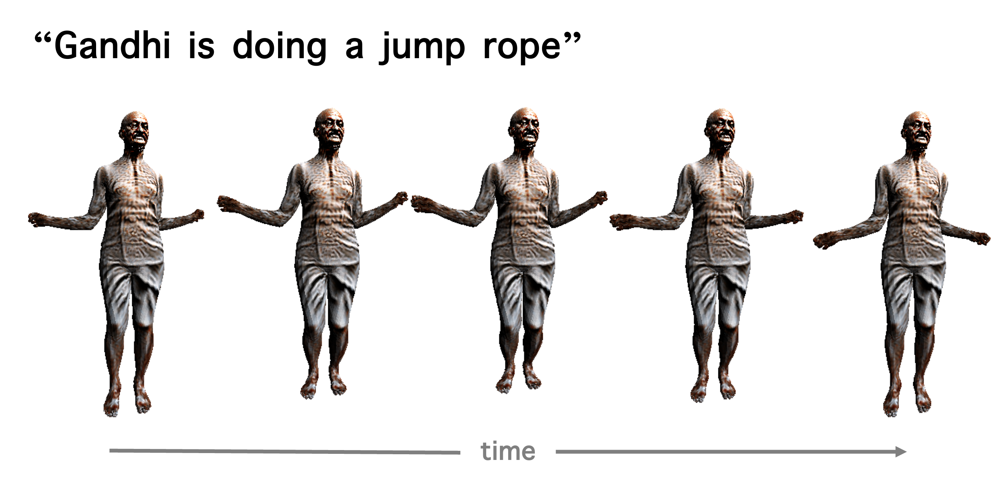
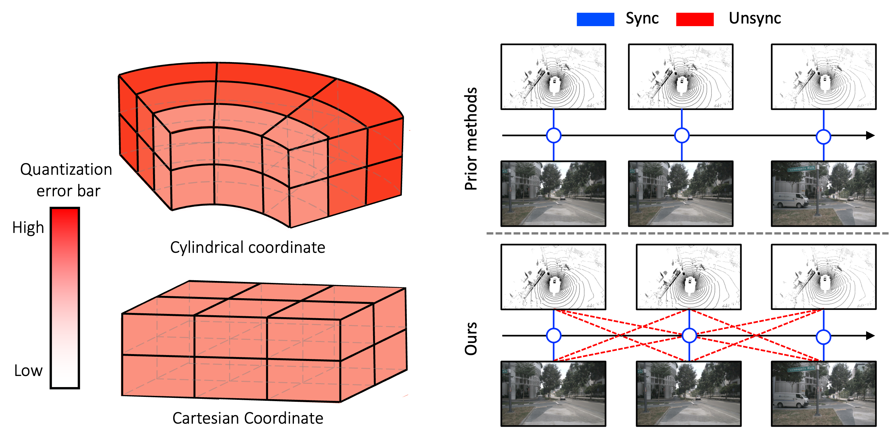
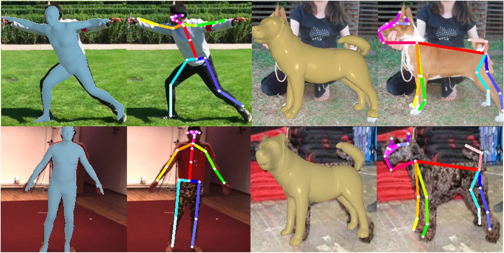

Kim Ji-Yeon
jiyeon.kim@postech.ac.krI am a Ph.D. student at AMILab in Convergence IT Engineering at POSTECH, advised by Tae-Hyun Oh. I received my Bachelor's degree in IT Engineering from Sookmyung Women's University. During my undergraduate, I also studied at University of Toronto as an exchange student.
My research focuses on computer vision and machine learning, specializing in understanding 3D world via 2D visual cues. Recently, my research interests are on perceiving 3D humans in the scene.
Publications

CLIP-Actor-X: Text-driven 4D Human Avatar Generation via Cross-modal Synthesis-through-Optimization
Kim Youwang*, Taehyun Byun*, Kim Ji-Yeon, Sungjoon Choi, Tae-Hyun Oh
Under review
Minister's Award @ ICT Paper Awards 2023
Kim Youwang*, Taehyun Byun*, Kim Ji-Yeon, Sungjoon Choi, Tae-Hyun Oh
Under review
Minister's Award @ ICT Paper Awards 2023

The Devil is in the Details: Simple Remedies for Image-to-LiDAR Representation Learning
Jo Won-Jun, Kwon Byung-Ki, Kim Ji-Yeon, Kyungdon Joo, Hawook Jung, Tae-Hyun Oh
ACCV 2024
Jo Won-Jun, Kwon Byung-Ki, Kim Ji-Yeon, Kyungdon Joo, Hawook Jung, Tae-Hyun Oh
ACCV 2024

Uni-DVPS: Unified Model for Depth-Aware Video Panoptic Segmentation
Kim Ji-Yeon, Oh Hyun-Bin, Kwon Byung-Ki, Dahun Kim, Youngjin Kwon, Tae-Hyun Oh
RA-L 2024
Oral presentation @ IROS 2024
[Paper / Project Page / Code]
Kim Ji-Yeon, Oh Hyun-Bin, Kwon Byung-Ki, Dahun Kim, Youngjin Kwon, Tae-Hyun Oh
RA-L 2024
Oral presentation @ IROS 2024
[Paper / Project Page / Code]

MinDVPS: Minimal Model for Depth-aware Video Panoptic Segmentation
Kim Ji-Yeon, Oh Hyun-Bin, Dahun Kim, Tae-Hyun Oh
CVPRW 2023
[Paper]
Kim Ji-Yeon, Oh Hyun-Bin, Dahun Kim, Tae-Hyun Oh
CVPRW 2023
[Paper]

CLIP-Actor: Text-Driven Recommendation and Stylization for Animating Human Meshes
Kim Youwang*, Kim Ji-Yeon*, Tae-Hyun Oh
ECCV 2022
Qualcomm Innovation Award 2022 AI4CC Workshop @ CVPR 2023
[Paper / Project Page / Code]
Kim Youwang*, Kim Ji-Yeon*, Tae-Hyun Oh
ECCV 2022
Qualcomm Innovation Award 2022 AI4CC Workshop @ CVPR 2023
[Paper / Project Page / Code]

Unified 3D Mesh Recovery of Humans and Animals by Learning Animal Exercise
Kim Youwang, Kim Ji-Yeon, Kyungdon Joo, Tae-Hyun Oh
BMVC 2021
[Paper / Project Page]
Kim Youwang, Kim Ji-Yeon, Kyungdon Joo, Tae-Hyun Oh
BMVC 2021
[Paper / Project Page]
Awards & Honors
- Best Paper Award at Korean Robotics Society Annual Conference (KRoC), 2024
- Minister’s Award at Electronics Times ICT Paper Awards (1st rank; $12,000), 2023
- Winner of Qualcomm Innovation Fellowship Korea ($4,000), 2022
- Outstanding Poster Presentation, IPIU, 2022
- National Science & Technology Scholarship, 2017-2019
- Academic Excellence Scholarship, 2015-2016
Academic Services
- Conference Reviewer: CVPR, ICLR, NeurIPS, ICRA
- Journal Reviewer: RA-L, TVCJ